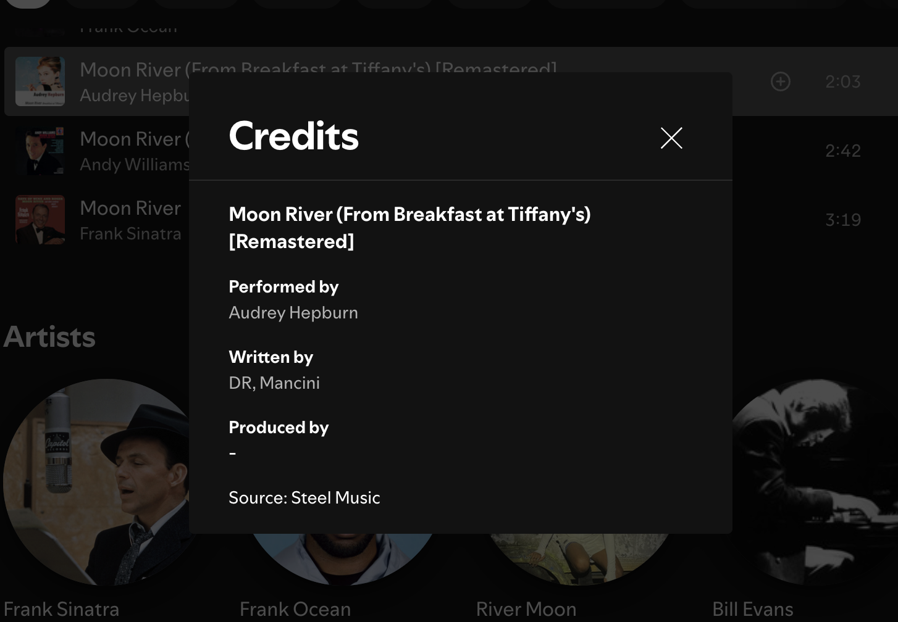
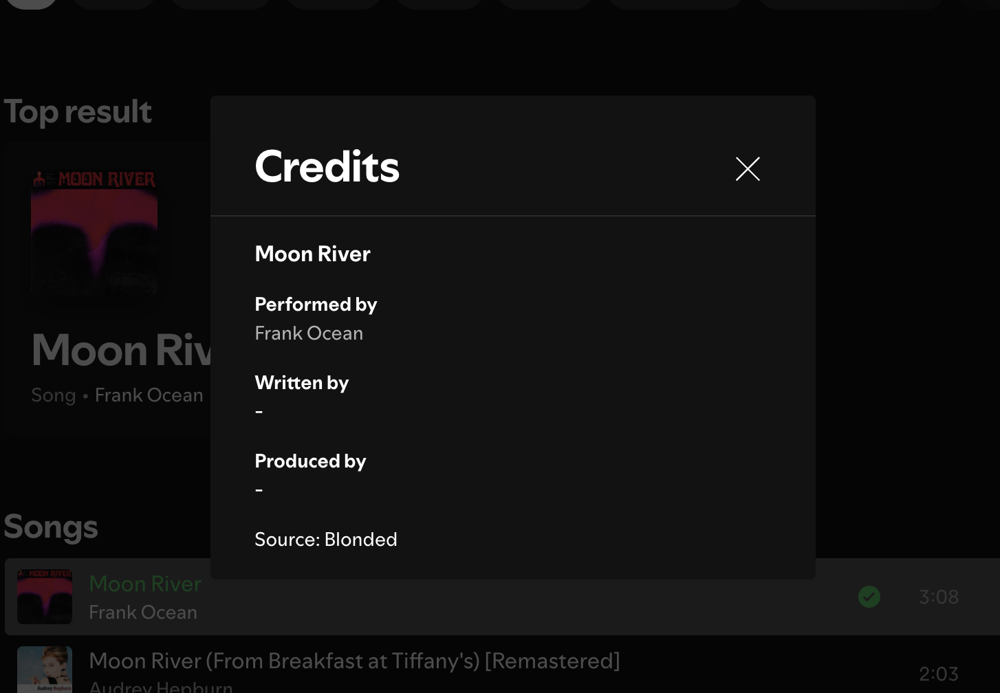

This week I decided to compare my original "Moon River" with covers, and I did this audibly. I wanted to hear how the same song changes depending on who performs it. I compared the original film version with a modern cover by Frank Ocean... two different styles. I picked all the Spotify data I possibly could.
Metadata Examples
Audrey Hepburn / Henry Mancini original soundtrack version
Frank Ocean unofficial modern cover
Despite having the same melody, both are performed very differently. I enjoyed this week as it focused more on the music itself, how music is meant to be approached.